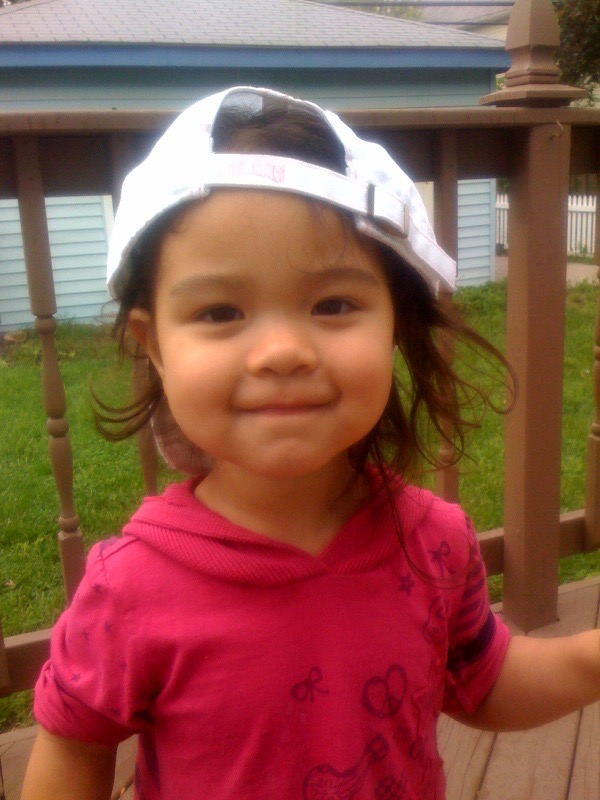

Autonomy vs shame and doubt is established by age 3
Initiative vs guilt begins at age 3
Industriousness vs inferiority begins at age 6

Years 2-5
Most parents begin officially potty training
Potting training is usually complete by years 3 or 4
The child is now walking easily
They are better with fine motor skills like puzzles
They are better with gross motor skills like balance
Starts learning numbers and counting
STARTS PRESCHOOL ✏️
Are more coordinated in movements
Can dress themselves
Begins developing a dominant hand (right or left)
Vision is fully developed
Develops a preferred friend
Is more social and interested in bonds and connection
White space
My parents told me that around the age of 3 or 4, I began having night terrors. They were on and off for about a year. Night terrors are basically nightmares but much more vivid and dramatic. Usually the child wakes up screaming and does not realize that you are trying to comfort them. It is a part of normal development and is pretty common.
White space
Erikson's Theory: Autonomy vs Shame and Doubt (Years 1-3)
- If given independence, they will develop autonomy in their choices and opinions - If you dont allow independence, the child will feel shame and self doubt - If they are not independent, they won't feel confident in choices they make later in life - This is the stage when they learn basic will
Erikson's Theory: Initiative vs Guilt (Years 3-5)
- Kids want to do stuff and take initiative in activities - If punished, they feel guilty and their desires are wrong - Parents should redirect instead of punish - This is the stage when they learn their purpose
Erikson's Theory: Industriousness vs Inferiority (Years 6-11)
- Kids should be able to do a task to completion - When doing or completing tasks, they should feel supported for their effort - If not supported, they may feel judged that they will not live up to your standards - This is the stage when they learn competence
Years 5-7
- They begin kindergarden!
- Growing friendships
- Begins understanding how thier behavior affects others